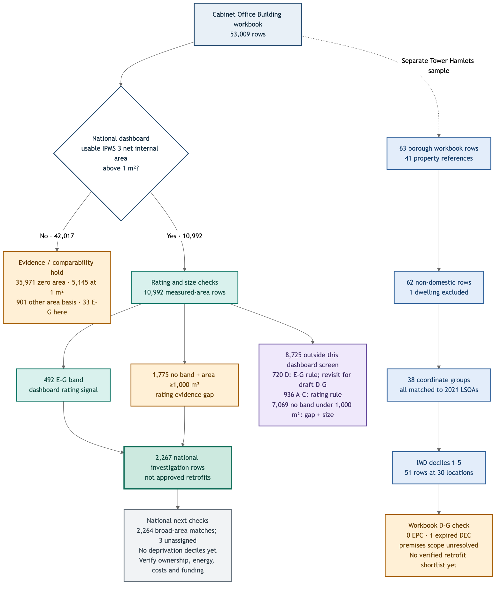

1. Find candidate records
Explore the 2,267 national prompts, filter by sector and place, and download the full provisional register with reported tenure.
Open national screenA public evidence prototype · 20 November 2026
We framed the work around a budget holder spending taxpayers’ money on energy-efficiency interventions in publicly owned, non-domestic properties. We reviewed the repository’s source notes, personas, user stories, national dashboard and Tower Hamlets pilot, then traced its estate workbook to the Cabinet Office. The 53,009 building rows include freeholds and leases, so public ownership is an assumption, not a verified fact. We mapped every screening step, separating missing evidence from methodological exclusions. The national dashboard yields 2,267 investigation prompts: 492 with E–G ratings and measured area, plus 1,775 large measured-area rows with no recorded band. Tower Hamlets follows a separate route: 51 rows at 30 locations lie in IMD deciles 1–5, yet no retrofit shortlist is verified. We found a mismatch between the dashboard’s E–G rule and the draft D–G method, and began checking publication rights, including login-gated sources. Next: national deprivation, ownership, meters, surveys, costs, savings and current investment.
How to read this: the list is a queue for checking evidence, not a funded works programme. Tap or select a technical abbreviation for a short definition.
The national route and the Tower Hamlets pilot use the same Cabinet Office estate release. Tower Hamlets is a separate local sample, not a subset of the national 2,267.

Explore the 2,267 national prompts, filter by sector and place, and download the full provisional register with reported tenure.
Open national screenFollow the Tower Hamlets map and worked evidence checks. Its neighbourhood deprivation and site identity work has not been applied nationally.
Open Tower HamletsSee the decision gates for ownership, energy, feasible measures, costs, savings, current investment and data rights.
Read methods and gapsReview where the estate records and geographic context came from, their dates, licences and limits.
Read sources and rights